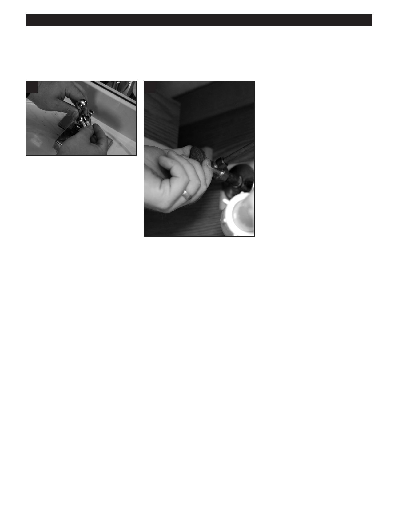

PA RT I C I PA N T R E S O U R C E G U I D E
Repairing a Ball-Type Faucet (continued)
How-to Steps
13
14
13. Replace the handle using an Allen
wrench.
14. Turn on the water and check for
leaks.
Notes:
28